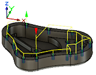

Désactivé.
Plan actif uniquement
Activé.
Sélection multi-axes
Sélectionnez cette option pour inclure des perçages contenus dans d'autres plans. Le paramètre par défaut recherche des perçages dans le plan actif, où l'axe Z représente le trait d'axe du perçage.
 |
|
Désactivé. |
Activé. |
Les sélections multi-axes créeront une position 3+2 pour le quatrième axe de rotation ou un usinage 5 axes continus. Utilisez l'angle limite pour restreindre le mouvement d'inclinaison.